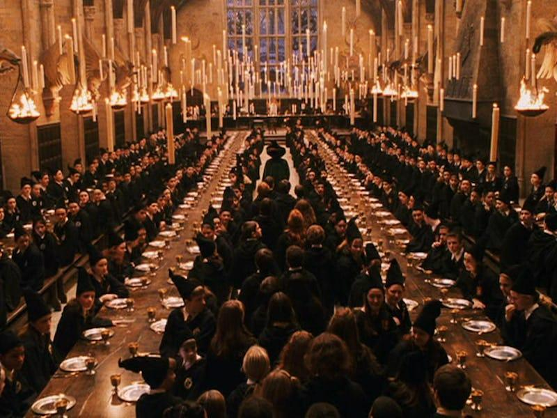
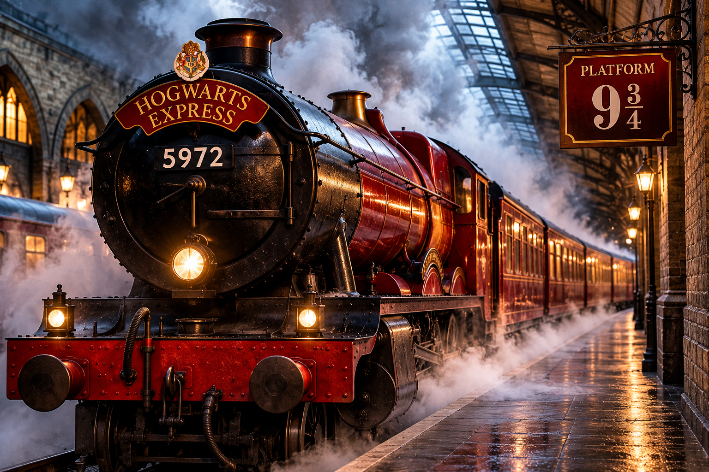
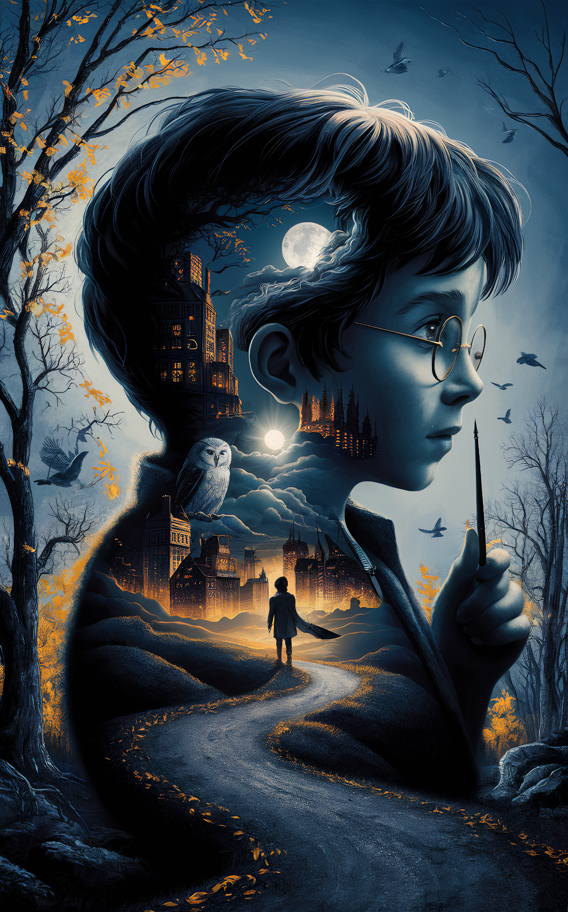
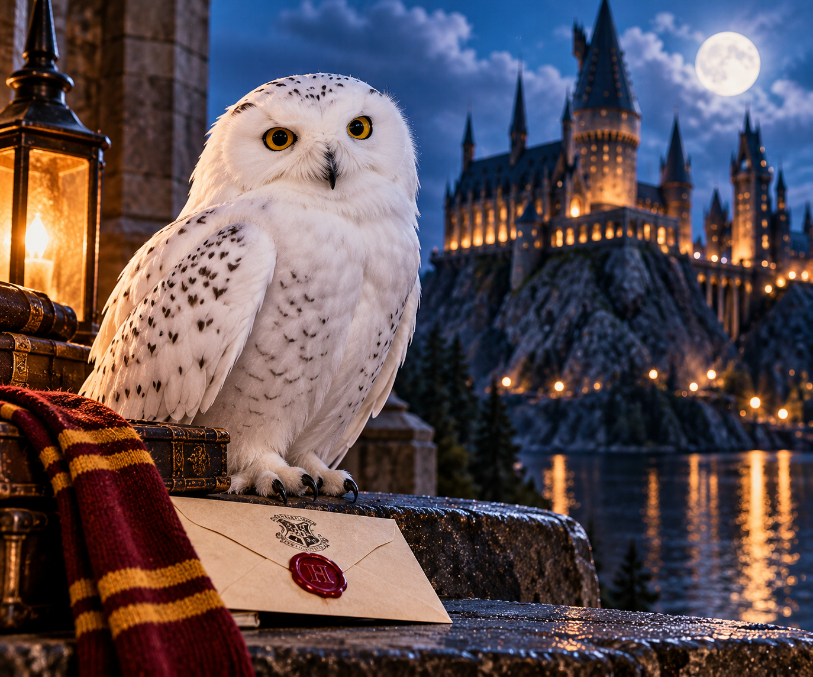

Magical Memories Gallery
Step into the magical world of Harry Potter! Explore unforgettable moments, enchanting places, and beloved characters. Each picture captures the wonder, friendship, and adventure that make Hogwarts truly magical!
Magical Places

Hogwarts Castle
Discover the magnificent Hogwarts Castle, a magical school hidden among beautiful mountains. Its ancient towers, mysterious corridors, and enchanted atmosphere make it a home for generations of young witches and wizards.
Image source: AI-generated artwork

The Great Hall
Step inside the magical Great Hall, where students gather for meals, celebrations, and important Hogwarts events. Floating candles illuminate the long dining tables, creating an unforgettable atmosphere of friendship and magic.
Image source: Pixabay search .

The Hogwarts Express
All aboard! The iconic red Hogwarts Express waits at Platform 9¾, surrounded by clouds of magical steam. Its glowing headlights illuminate the railway platform as the train prepares to carry young witches and wizards on an unforgettable journey to Hogwarts School of Witchcraft and Wizardry.
Image source: AI-generated artwork
Wizards and Friendship

Friendship and Courage
Celebrate the unforgettable friendship between Harry, Hermione, and Ron. Through magical adventures, difficult challenges, and unexpected discoveries, they show that courage, loyalty, and friendship can overcome even the darkest challenges.
Image source: AI-generated artwork

A Magical Wizarding World
Enter a mysterious wizarding world filled with moonlit skies, enchanted castles, magical creatures, and hidden adventures. This imaginative artwork captures the mystery and wonder of the journey into the world of magic.
Image source: AmazingArtWork on Pixabay .
Magical Companions

Hedwig
Hedwig, Harry's loyal snowy owl, is a trusted companion through every adventure and quiet moment at Hogwarts. Her graceful presence adds charm, comfort, and magic to the wizarding world.
Image source: AI-generated artwork
Magical Objects

The Sorting Hat and Wand
A magical wand and the legendary Sorting Hat are symbols of wonder, choice, and destiny in the world of Hogwarts. Together, they represent the beginning of each student's unforgettable journey.
Image source: AI-generated artwork